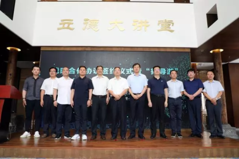

找导游APP新版本：“旅游场景前端服务平台”正式上线

7月7日，“找导游”平台新版上线发布会在洛邑古城立德苑举行。

“找导游APP”是一款由北京中渡科技有限公司研发面市，服务于广大游客与导游的一站式、多元化移动端旅游共享经济平台，致力于打造以旅游价值服务为核心的生态系统，去中介化地连接游客和导游，解决旅游乱象。

对旅游从业者而言，“找导游”通过移动客户端及在线平台为其提供技术基础设施；对旅游者而言，“找导游”通过网站及移动客户端的全平台覆盖，随时随地为其提供多种数据支撑的的导游选择方式及旅行信息的深度搜索，帮助旅游者更聪明地安排旅行。
发布会上，北京中渡科技有限公司技术总监严道永描述了游客旅游过程中的场景问题，讲述了旅游行业复杂的利益关系，并就此引出解决旅游问题的关键——“找导游”APP。同时，向与会来宾详细讲解、演示了APP的主要功能。

据严道永介绍，找导游APP通过打造“职业导游+互联网”创新模式，将全国持证的专业导游纳入平台，为游客提供针对性强、安全性高、服务优良的导游预约平台。游客只需一部手机，即可随时预约同城、异地或任意景点导游，让游客在享受最大便利的同时，体验到专业导游的优质服务。
同时，为帮助旅行社和导游转型升级，用技术高效服务旅游后市场，本次发布会上，“找导游”还同步推出了国内领先的全域旅游技术产品研发系统、一站式旅行社业务+财务+资源采购生态化平台——“海星ERP”，致力解决旅游行业“低价、赌单”痛点现状，通过“数据背书”创造旅游品牌溢价，促进旅游行业效益最大化。据北京中渡科技有限公司技术总监严道永介绍，“大数据服务”、“有效流量抓取”是“海星ERP”系统的突出优势，同时，包括收客质量内控、计调操作内控、单团利润内控、回款催收内控、员工离职内控、个性定制内控在内的高度细化、科学定制的内控管理系统将为用户提供最大程度的帮助与个性化定制服务，打造旅游地接系统的行业专家。

据悉，“找导游”项目新版本将以河南省作为首推市场。项目已获得洛阳市老城区政府的全面认可，并在本次发布会上，现场签署了《推进建设移动旅游共享经济平台（“找导游”APP）战略合作协议》。双方将借助洛阳丰富深厚的历史文化旅游资源及找导游平台的集结能力与核心优势，以“建设国内一流的移动旅游共享经济平台”为合作方向，全面扩大洛阳旅游业、旅游场景、旅游后市场的发展规模，促进旅游行业的生态发展与经济增长，以河南为旅游场景网络化市场核心，辐射中国旅游市场。